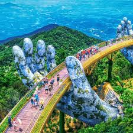
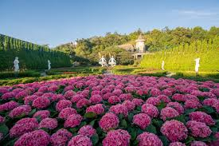
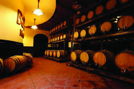
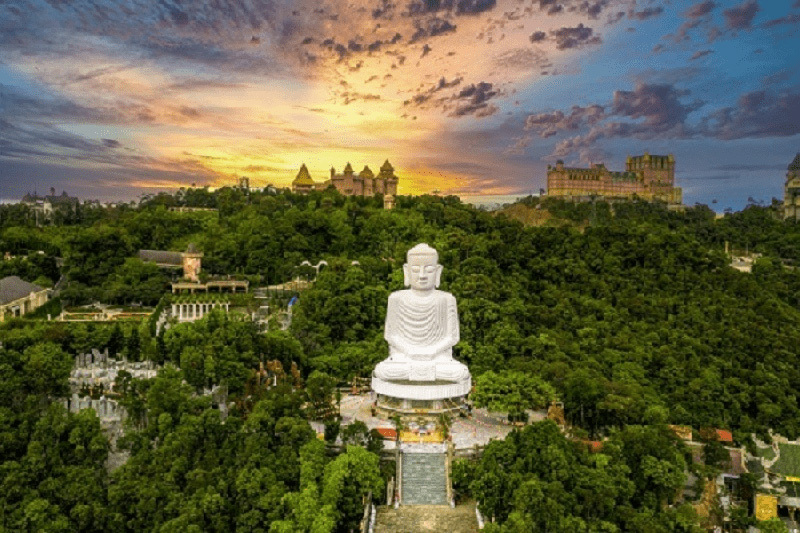
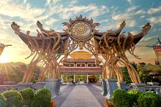

Giới Thiệu Tour
Bà Nà Hills là điểm đến nổi bật của Đà Nẵng, nằm trên đỉnh núi cao với khí hậu mát mẻ, kiến trúc châu Âu cổ kính và nhiều khu vui chơi hấp dẫn.
Tour Bà Nà Hills Cầu Vàng đưa du khách trải nghiệm cáp treo vượt núi, check-in Cầu Vàng, khám phá làng Pháp, vườn hoa Le Jardin D’Amour, hầm rượu cổ và khu giải trí Fantasy Park.
Điểm Nổi Bật

Cầu Vàng
Check-in cây cầu nổi tiếng với đôi bàn tay khổng lồ giữa mây trời.
Cáp Treo Vượt Núi
Ngắm toàn cảnh rừng núi Đà Nẵng từ tuyến cáp treo hiện đại.
Làng Pháp Cổ Kính
Dạo bước giữa những tòa lâu đài, quảng trường và con phố châu Âu.

Vườn Hoa Le Jardin
Không gian rực rỡ sắc hoa, phù hợp để chụp ảnh và thư giãn.
Fantasy Park
Khu vui chơi trong nhà với nhiều trò giải trí cho gia đình và nhóm bạn.

Hầm Rượu Debay
Khám phá công trình cổ độc đáo được xây dựng trong lòng núi.

Chùa Linh Ứng
Không gian tâm linh thanh tịnh giữa núi rừng và mây trời.

Góc Check-in Trên Mây
Nhiều góc chụp đẹp với lâu đài, mây núi, cầu đá và quảng trường.
Lịch Trình Chi Tiết
Ngày 1 — Khởi Hành Đến Bà Nà Hills
07:30 — Xe đón khách tại điểm hẹn ở Đà Nẵng.
08:30 — Di chuyển đến khu du lịch Bà Nà Hills.
09:30 — Trải nghiệm cáp treo, ngắm cảnh núi rừng từ trên cao.
10:30 — Check-in Cầu Vàng và vườn hoa Le Jardin D’Amour.
12:00 — Dùng bữa trưa tại nhà hàng trong khu du lịch.
14:00 — Khám phá làng Pháp, quảng trường và các công trình cổ kính.
18:30 — Ăn tối, nhận phòng nghỉ và tự do dạo Bà Nà về đêm.
Ngày 2 — Vui Chơi Và Tạm Biệt Bà Nà
07:30 — Ăn sáng tại khách sạn.
08:30 — Tham quan chùa Linh Ứng và hầm rượu Debay.
10:00 — Vui chơi tại Fantasy Park.
11:30 — Ăn trưa và nghỉ ngơi.
13:30 — Tự do chụp ảnh, mua quà lưu niệm.
15:00 — Di chuyển xuống núi bằng cáp treo.
16:30 — Xe đưa khách về điểm hẹn, kết thúc tour.
Bảng Giá Tour
| Đối Tượng | Giá / Người | Ghi Chú |
|---|---|---|
| Người lớn | 3.600.000 ₫ | Bao gồm xe đưa đón, khách sạn, bữa ăn và vé tham quan cơ bản. |
| Trẻ em 5–11 tuổi | 2.700.000 ₫ | Có ghế ngồi riêng, ngủ chung phòng với người lớn. |
| Trẻ em dưới 5 tuổi | Miễn phí | Ngồi cùng người lớn, chưa gồm chi phí phát sinh riêng. |
| Phụ thu phòng đơn | +550.000 ₫ | Áp dụng khi khách muốn ở một mình một phòng. |
Giá đã gồm: xe du lịch, khách sạn, bữa ăn theo lịch trình, hướng dẫn viên, bảo hiểm và vé tham quan cơ bản.
Đánh Giá Khách Hàng
4.8 / 5 ★★★★★
149 đánh giá từ khách đã tham gia tour.
Trần Đức Nam
Cáp treo rất đáng trải nghiệm, làng Pháp đẹp và lịch trình không quá mệt.
Lê Thu Trang
Tour phù hợp cho gia đình, đồ ăn ổn, hướng dẫn viên nhiệt tình và vui vẻ.
Nguyễn Phương Linh
Cầu Vàng ngoài đời rất đẹp, thời tiết mát mẻ và nhiều góc chụp ảnh ấn tượng.